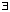
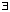

Definition
The sequence (xn) in a metric space is convergent to x
 X if:
X if: | Previous page (Definition and examples of metric spaces) | Contents | Next page (Continuity in metric spaces) |
The definitions given earlier for R generalise very naturally.
Definition
The sequence (xn) in a metric space is convergent to x X if:
 > 0  N N such that n > N
> 0  N N such that n > N  d(xn, x) < .
d(xn, x) < . x in the metric space X if the real sequence (d(xn , x)) 0 in R.
x in the metric space X if the real sequence (d(xn , x)) 0 in R. if a sequence is convergent in one metric, it is convergent in the others. x and (yi) y in R. That is, convergence is componentwise.
if a sequence is convergent in one metric, it is convergent in the others. x and (yi) y in R. That is, convergence is componentwise.This becomes even more important in:
 we have d(fn , 0) = 1 for all n and so this sequence does not converge to the zero-function in the metric d. In fact it does not converge took any function.
we have d(fn , 0) = 1 for all n and so this sequence does not converge to the zero-function in the metric d. In fact it does not converge took any function.
We will look at C[0, 1] with the d-metric in more detail later.
| Previous page (Definition and examples of metric spaces) | Contents | Next page (Continuity in metric spaces) |